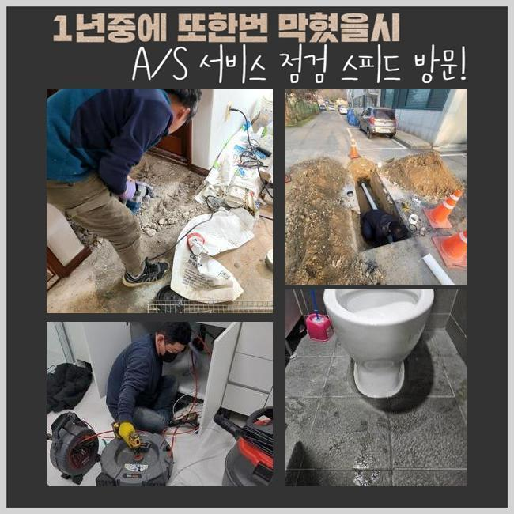
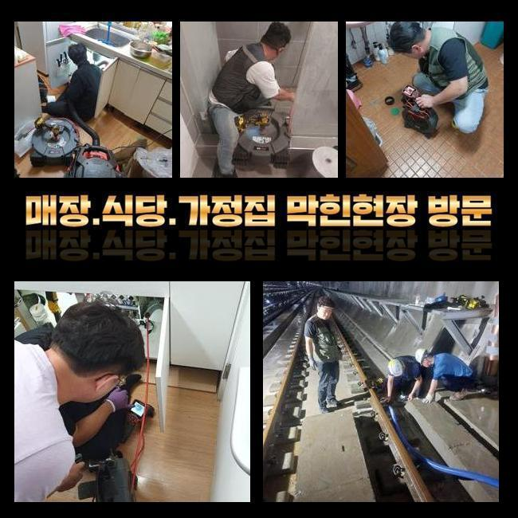
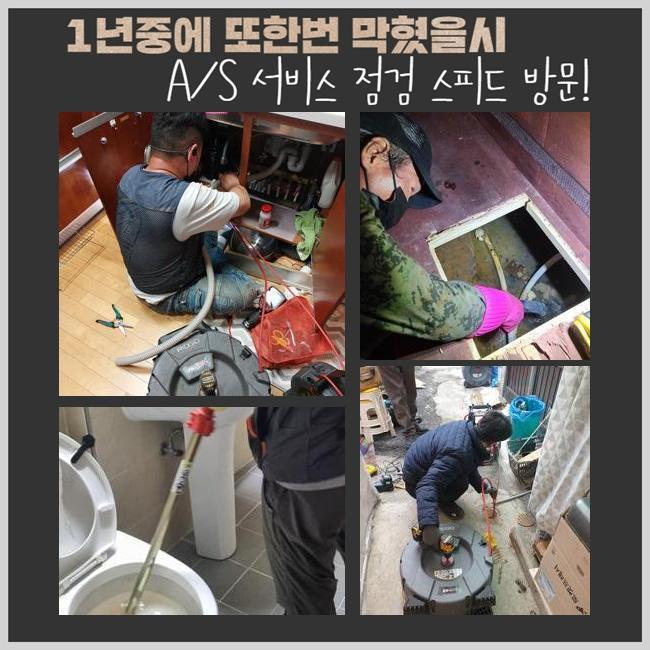
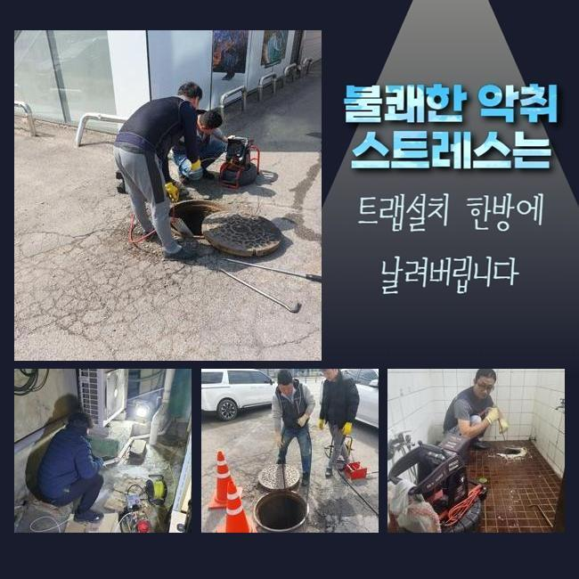
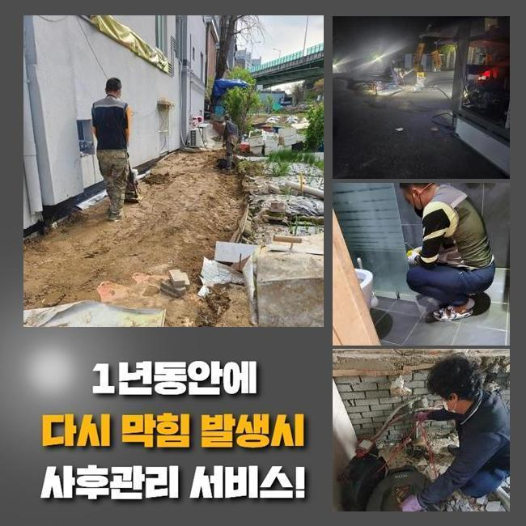
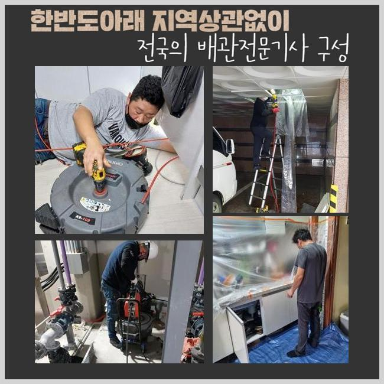

🏠 대야동변기막힘 정왕본동 하수구청소 누수
용인 정왕본동 변기막힘 전문 시공 후기

📋 작업 개요
- 위치: 용인 정왕본동, 정왕본동, 용인
- 서비스 유형: 변기막힘, 하수구막힘, 배관막힘, 누수수리, 역류해결, 뚫는업체, 배관청소, 고압세척
- 작업 일시: 2025. 1. 10. 10:52
- 업체명: 하수구수사대 (010-5615-2118)
🔍 문제 상황
대야동변기막힘 정왕본동 하수구청소 누수
관로가 정체되는 문제는 살다가 한두번은 겪어보았을거라 생각해요
그중 화장실이나 주방에서 생기는 관로막힘은 일상에 곤란함을 유발하고 있답니다
그럼 주방시설에선 어떤 사유로 막힘상황이 일어나는것인지 알아볼 필요가 있겠죠
주방공간은 요리할때 발생되는 음식 쓰레기나 기름슬러지와 같은 것들이 관로에 누적돼 막힘이 일어나요
이런 상황이 지속되면 물빠짐이 안되는건 기본이고 구린내가 올라오며 이물질들로 인해서 파이프가 노후화되어 누수까지 나타날수 있겠죠
어떤 분들은 이런일이 생겼다면 배관을 도구로 분해해서 해결해보려 시도하시는데요
다만 해당 대책은 미봉책에 불과하고 근원적인 트러블을 소멸시키지 못한다면 정체가 갱발하기 쉬워요
막힘 사유가 배수관의 하부쪽에 자리잡았다면 보통사람들이 그것들을 포착하거나 정리하기 힘들기 때문이죠
거기에 더해 서툴게 수리를 한다면 도리어 파이프에 부담을 주게되어 침전물들을 온당하게 소멸시키지 못할수가 있죠
그러하기에 관로의 정체가 발발하였다면 전문가에게 의뢰하여 정확하고 온전히 처치하는게 합당합니다

🔎 원인 분석
💡 전문가 진단: 정밀 진단 장비를 사용하여 슬러지의 고착 여부를 판명하고 타격/세척 작업을 실시했습니다.
어제 저희측은 배수관정체 관련하여 수선의뢰를 받았는데요
의뢰자께서는 화장실의 물막힘으로 역류 및 악취발생이 심하여 평범한 삶에 커다란 지장을 경험하고 있으셨답니다
구린내가 진동하는바람에 집안에 있기가 힘들어졌고 역류증세까지 나타나서 가정안이 더럽혀지는 정황에 이르게 되었다 하셨어요
의뢰인의 괴로움을 조속히 없애드리려 즉각 고장이 생긴 위치로 이동했어요
댁에 당도한 뒤에 의뢰인분께 대체적인 설명을 드리고 고장상황을 자세히 검사했습니다
의뢰인께선 욕실에서 배수가 아예 안되고 역류증세까지 간헐적으로 나타나 내부공간이 오손된 상황이라고 토로하셨어요
열흘전부터 막힘이 목견되었는데 방치하는 바람에 더 악화되었다고 하십니다
그러할때 간단하게 통수를 진행하는걸로는 사태를 해소하기 어렵답니다
이물들이 파이프에 강력히 고착화되어 있는거라서 내측의 상황을 정밀하게 분석하고 합리적인 계획을 세워 시공해나가야 해요
안쪽에서 일어난 막힘은 육안으로 검사하기 어려울 때가 많답니다
그래서 저희 측은 내시경기기를 사용해 관로내부 현황을 밀도있게 관찰하는 시공을 이어나갔습니다
내시경을 통해 들여다보니 파이프 내부엔 장시간 적층된 석회물질들과 기름슬러지가 엉겨붙어 구멍을 빼곡히 가로막고 있었답니다

🔧 작업 과정
또 잔재들이 견고하게 자리를 잡아서 단순하게 물세척만해서는 정리가 난망하였어요
검사를 마무리하고 분쇄기기를 이용해서 파이프에 강력하게 붙은 오물들을 세척하는 일을 시행하였어요
해당 기기는 배관안에 고착화된 잔재들을 신속하게 파괴하고 정리하게 만드는 기기로 안쪽의 기름슬러지가 굳어서 안움직일때 커다란 역할을 수행합니다
해당 기기는 회전력으로 이물들을 자잘하게 쪼개서 하수관에 부착된 뻣뻣한 기름때와 석회물질을 적절하게 처리해낼수 있는거죠
그렇긴하지만 조절을 잘못하여 시공을 이어나간다면 파이프가 훼손되는 경우도 있어 풍부한 경험과 주의깊은 시공이 요망되죠
금번에 찾아간 현장은 게다가 이물들이 배관에 견고하게 자리잡은 경우였기에 잠깐의 과정만으로는 정리하기 어려웠답니다
주위를 둘러싼 석회찌꺼기는 더욱더 그러한 형편을 악화하게 만들었어요
그러한 이유로 저희팀에선 고압세정기기와 분쇄장비를 동시 이용하면서 이물들을 정리하고 깨끗이 제거하는 작업을 단행하였어요
강인한 파워로 침전물을 제거할때엔 잔재들이 주위로 퍼지지 못하게끔 철저하게 보호해야 돼요
찌꺼기들이 분사되어 주변환경이 매우 더러워진다면 처치가 어려워지기도 하므로 집중해서 작업해나가야 하는거죠
그러므로 시공중에 해당되는 문제들을 막기 위하여 보양작업을 진행했고 고객님이 불편하지 않게 안전하게 업무를 실시하였습니다
슬러지를 소멸시키고 재차 배관카메라를 집어넣어 관로를 점검했어요
내측에 잔류하는 찌꺼기나 누설여부와 같은 것들을 점검하는건 대단히 중요하다 말씀드릴수 있죠
금번 시공에선 수시로 관 내측을 조사하고 연쇄적으로 발발하기 쉬운 트러블을 예방했어요
전반적으로 노폐물들이 정리된걸 파악한뒤에 생활하수를 부으면서 온전히 뚫렸는지 시험하였습니다
온전히 소멸되는 모습을 직관적으로 파악하였습니다
배수문으로 오수가 원활하게 소멸되는걸 고객분도 인지하셨고 분명하게 수리되었다는걸 확실시했답니다
사태를 방치하는 바람에 침전물이 한층더 늘어난다면 주위세대분에게 문제가 파급될수 있답니다
그러한 상황에서는 정리해야할 것이 더더욱 증가할수 있어서 서둘러서 수리를 받으시는 것이 마땅합니다


✅ 작업 완료
또 하수구막힘은 우리의 일상생활에 고충을 발생시키므로 되도록이면 신속하게 정리하는게 좋죠
관로막힘 상황이 길어진다면 구린내가 올라오는것을 포함해서 관로훼손에 따른 누수증세까지 생겨날수 있단 사실도 인지하고 있어야 하겠죠
시공전엔 꼭 적합한 장비들을 갖춰야 해요
그것이 미비되면 검사를 똑바로 못해서 다시 막힐수도 있어요
갑작스럽게 발생된 배관정체로 진단이 필요하다면 편안히 저희쪽에 문의해 주십시오



⚠️ 베란다 누수 및 방수 관리 방법
- ✅ 비가 많이 올 때 창틀 주변이나 아래층 천장에 얼룩이 생기는지 정기적으로 확인해 보세요.
- ✅ 우수관 주변 실리콘 마감이 들뜨거나 깨진 틈새가 있는지 손상 여부를 수시로 체크하세요.
- ✅ 베란다 바닥 타일의 줄눈(메지)이 소실되면 그 틈으로 물이 침투하여 누수가 유발됩니다.
- ✅ 누수 의심 증상 발견 시 방치하면 아래층 손실이 커지므로 즉시 전문가의 진단을 받으십시오.
💡 핵심 정리
- 확실한 장비 작업(내시경 점검 및 샤프트 스케일링)으로 원인을 뿌리 뽑습니다.
- 작업 후 1년 이내에 동일한 부위 재발 시 100% 무상 A/S 서비스를 보장합니다.
- 서울 · 경기 · 인천 전 지역에 24시간 언제든 긴급 출동할 수 있도록 항시 대기 중입니다.
❓ 자주 묻는 질문 (FAQ)
🚨 용인 정왕본동 변기막힘 문제로 고민이신가요?
정확한 원인 진단과 확실한 시공으로 재발 없는 해결을 약속드립니다.
24시간 긴급 출동 | 서울 · 경기 · 인천 전지역 | 1년 내 재발 시 무상 A/S